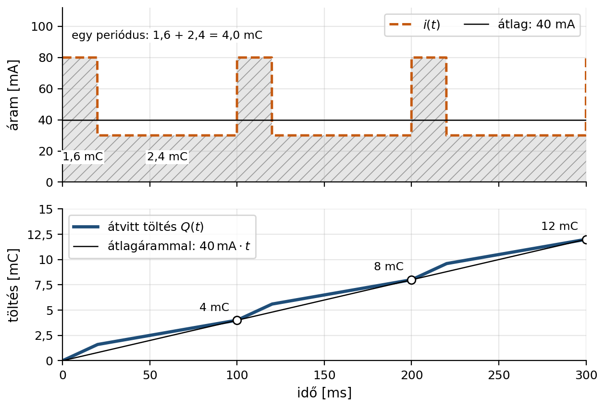
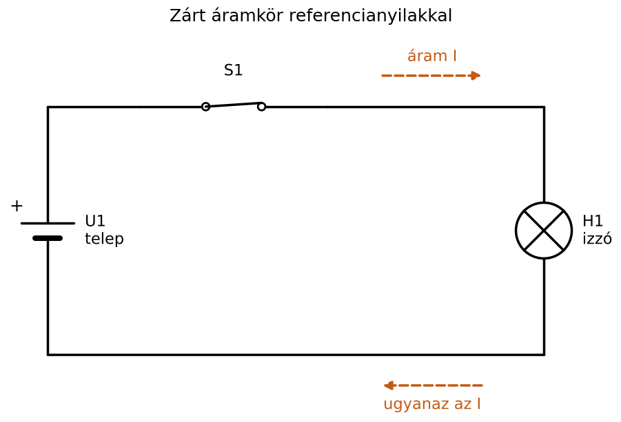
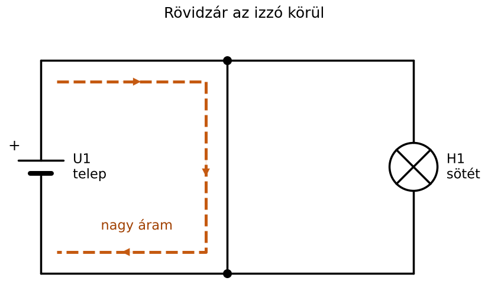
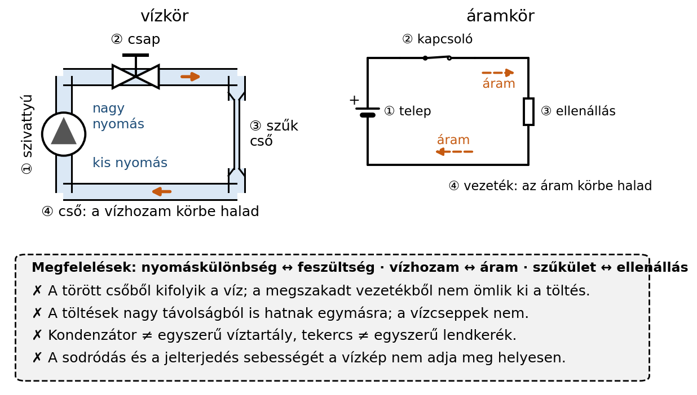
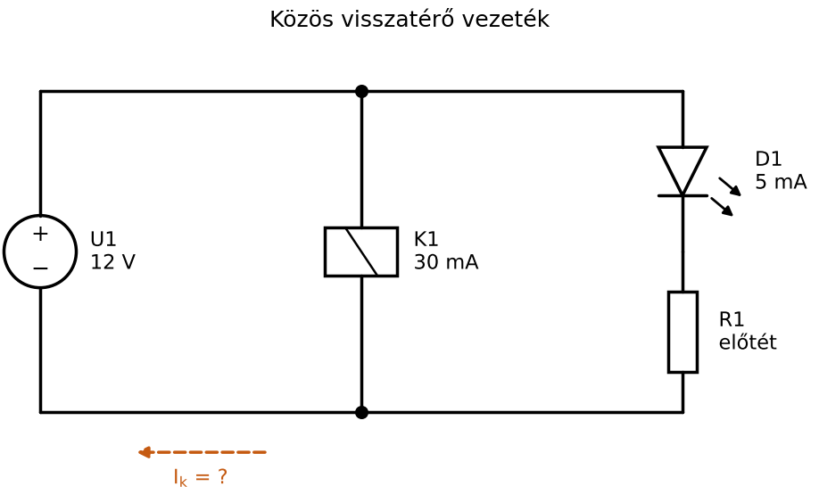

Mire leszel képes az alfejezet végén?
A könyv futó példájában, a szenzormodulban egy piros LED (világítódióda) jelzi, hogy a mikrovezérlő él. A tervezett árama 5 mA. Tegyük fel, hogy a LED egyik lábát bekötötted a mikrovezérlő kimenetére, a másikat viszont elfelejtetted a föld felé zárni. A program fut, a kimenet bekapcsol, a LED mégis sötét. Miért? Hiszen „odaért hozzá az áram”.
A kérdés mögött két tévhit lehet: hogy az áram csomag, amelyet elég elküldeni a fogyasztóhoz, és hogy a fogyasztó „elfogyasztja”. Egyik sem igaz. Az áram töltések rendezett mozgása, amely csak zárt körben tartható fenn. Ebben az alfejezetben ezt a képet építjük fel, mert minden későbbi számítás erre támaszkodik.
Nézzük a legegyszerűbb áramkört: egy telep, egy kapcsoló, egy izzó és a köztük lévő vezetékek.
A fémvezetékben rengeteg olyan elektron van, amely nem tartozik egyetlen atomhoz sem, hanem a fémrácsban szabadon mozoghat. Ezek a szabad elektronok. A telep nem „tölti fel” velük a vezetéket: a töltéshordozók már ott vannak, a telep csak körbehajtja őket. Olyan ez, mint egy zárt, vízzel teli csőrendszer szivattyúval: a víz mindenütt ott van, a szivattyú keringeti.
A sok mozgásra képes töltést tartalmazó anyagok vezetők (réz, alumínium, de a sós víz is, ahol ionok mozognak), a helyhez kötött töltésűek szigetelők (műanyag, üveg, száraz levegő). A kettő között vannak a félvezetők, róluk a diódáknál lesz szó.
Gondolkodj előre! A kapcsolót átteszed a visszatérő ágba, az izzótól a telep felé vezető vezetékbe. Világít-e az izzó nyitott kapcsolónál?
Nem világít. A zárt körben mindenhol ugyanaz a töltés halad végig, ezért mindegy, hol szakítod meg. A motivációs LED is ezért maradt sötét: hiányzott a visszatérő út.
Definíció. Az elektromos töltés (jele ) az anyag egyik alaptulajdonsága, amely miatt a testek elektromos erőt fejtenek ki egymásra. Mértékegysége a coulomb (C). Kétféle előjele van: az azonos előjelű töltések taszítják, az ellentétesek vonzzák egymást (ezt írja le számszerűen a Coulomb-törvény, amelyre itt nincs szükségünk).
A töltés nem osztható akármilyen finomra. A legkisebb, szabadon előforduló adagja az elemi töltés:
(a pontos SI-érték C). Az elektron töltése , a protoné . Egy coulomb tehát elemi töltés. Ez hatalmas szám, ezért a gyakorlatban nem elektronokat számolunk, hanem coulombot.
Fontos, hogy a töltés nem keletkezik és nem vész el, csak vándorol. A vezeték kívülről nézve semleges: az elektronok negatív és a rácsionok pozitív töltése kiegyenlíti egymást, akkor is, amikor áram folyik.
Definíció. Az áram (áramerősség, jele ) a vezető egy kiválasztott keresztmetszetén egységnyi idő alatt áthaladó töltés:
Itt az áthaladt töltés, az ehhez tartozó idő (, delta: „mennyi”). Mértékegysége az amper (A), és a képletből látszik, hogy . Szavakkal: 1 A azt jelenti, hogy másodpercenként 1 coulomb töltés halad át a keresztmetszeten. A képlet állandó áramra pontos, változó áramnál a alatti átlagot adja.
Az elektronikában ennél jóval kisebb áramok is mindennaposak: 1 mA (milliamper) A, 1 µA (mikroamper) A. Így 5 mA ugyanaz, mint 0,005 A, azaz 5000 µA, és 5 mC/s. Az előtagokat (prefixumokat) Teljesítmény, energia, hatásfok és mértékegységek rendszerezi.
Átrendezve : az áramból és az időből kiszámolható az átvitt töltés. Mértékegység: .
Egyenáramnak (DC, direct current) nevezzük az időben állandó irányú, a legegyszerűbb esetben állandó nagyságú áramot. Ha az áram időben változik, a pillanatértékét kisbetűvel írjuk: az áram a időpillanatban. Ilyen az, amikor a mikrovezérlő időnként felébred, rövid ideig sokat fogyaszt, majd újra kevesebbet. Ekkor az átvitt töltés az görbe alatti terület: a görbét keskeny időszeletekre vágod, minden szeletben töltés halad át, és ezeket összeadod.

Az áramnak iránya van. Megállapodás szerint a technikai áramirány a pozitív töltések mozgásának iránya: a külső körben a telep + sarkától a − sarka felé mutat. A fémekben valójában a negatív elektronok mozognak, éppen az ellenkező irányba. A megállapodás régebbi ennél a felismerésnél, de nem okoz hibát: a balra haladó negatív töltés ugyanazt a töltésszállítást végzi, mint a jobbra haladó pozitív. A könyv mindig a technikai irányt használja.
Egy bonyolultabb kapcsolásban előre nem tudod, merre folyik az áram. Ezért először felveszel egy referenciairányt: a rajzon nyilat teszel az ág mellé, és ezt az irányt tekinted pozitívnak. A nyíl nem állítás, hanem megállapodás. Ha a számítás eredménye pozitív, az áram a nyíl irányában folyik; ha negatív, az ellenkező irányban. A negatív eredmény tehát nem hiba.

A rajzon a vezetékek vonalak, az összekötött pontok között pedig ellenállásmentesek: ez az ideális vezeték modellje. A valódi vezetéknek van kis ellenállása, ez majd a Földelési stratégiák és visszatérő áramutak alfejezetben fog számítani.
Definíció. Zárt áramkör az a vezető hurok, amelyen a töltés a forrásból kiindulva, a fogyasztón át visszajuthat a forráshoz. Tartós áram csak ilyenben folyik.
Miért? Ha a hurok megszakad, a töltések nem tudnak továbbhaladni: nagyon rövid ideig felgyűlnek a megszakítás két oldalán, ez a felhalmozódás azonnal ellentart a forrásnak, és az áram megszűnik. Ez a szakadás (nyitott kör): a hurok minden pontján, nem csak a megszakításnál.
Zárt, elágazás nélküli hurokban viszont a töltés sehol sem torlódhat fel tartósan, ezért minden keresztmetszeten ugyanakkora az áram. Az izzó előtt és után ugyanannyi amper folyik. A fogyasztó nem áramot fogyaszt, hanem a töltések által szállított energiát alakítja fénnyé és hővé. (Elágazásnál az áram szétoszlik, de az összeg megmarad; ezt a Kirchhoff törvényei, soros és párhuzamos kapcsolás mondja ki.)
Rövidzárnak nevezzük, ha a forrás két sarka között a fogyasztót megkerülő, nagyon jól vezető út keletkezik, például egy leejtett csavarhúzó vagy egy véletlen ónhíd.

Rövidzárnál az izzó szinte nem kap áramot (elsötétül), a hurokban viszont nagyon nagy áram folyik, amely melegíti a vezetéket és a telepet. Egy akkumulátornál ez tüzet okozhat. A védekezés: biztosíték, áramkorlátos labortáp; a részletek az Energiatárolók veszélyei: akkumulátor, kondenzátor, induktivitás alfejezetben.
Továbbvitt eredmény. Az áram technikai iránya + sarkától a − sark felé mutat a külső körben; a rajzon felvett áramnyíl referenciairány, a negatív eredmény ellentétes tényleges irányt jelent. Erre épül a feszültségnyíl (Feszültség, potenciál és a föld), a Kirchhoff törvényei, soros és párhuzamos kapcsolás és a Valós források, Thévenin és Norton.
Továbbvitt eredmény. Minden áramnak van visszatérő útja a forráshoz, és tartós áram csak zárt hurokban folyik. Amikor egy kapcsolási rajzon áramot követsz, mindig keresd meg a teljes hurkot. Erre a gondolatra épülnek a Földelési stratégiák és visszatérő áramutak és a Reflexió, lezárás és illesztés.
Egy rézvezetékben a szabad elektronok sűrűsége nagyjából darab köbméterenként (kerekített fizikai adat). Legyen a vezeték keresztmetszete , és sodródjanak az elektronok átlagosan sebességgel. idő alatt egy keresztmetszeten az az elektronmennyiség halad át, amely egy hosszú vezetékdarabban volt:
Ez a sodródási sebesség. Mértékegység: egysége , az áramé C/s, a hányados tehát m/s. A kézi példa megmutatja, hogy ez meglepően kicsi: tizedmilliméterek másodpercenként.
Akkor miért gyullad fel azonnal a lámpa? Mert nem kell megvárni, hogy egy adott elektron odaérjen. A kapcsoló zárásakor az elektromos hatás a vezeték mentén a fénysebesség nagy hányadával (nagyságrendileg m/s) terjed, és szinte egyszerre indítja meg az elektronokat a kör minden pontján. Gondolj egy golyókkal teli csőre: ha az egyik végén betolsz egy golyót, a másik végén azonnal kiesik egy, pedig egyik golyó sem tett meg hosszú utat. A jel gyors, a töltéshordozó lassú. A jel véges terjedési ideje gyors digitális áramköröknél válik fontossá (Felfutási idő, sávszélesség és távvezetékek).

A hasonlatban a szivattyú a forrás, a nyomáskülönbség a feszültség (a következő alfejezet fogalma; egyelőre úgy gondolj rá, mint a hajtóerőre), a másodpercenként átfolyó vízmennyiség az áram, a szűk csőszakasz az ellenállás (Ellenállás és az Ohm-törvény), a csap a kapcsoló.
A modell több ponton téved (az ábra alján): a törött csőből kifolyik a víz, a megszakadt vezetékből nem ömlik ki a töltés; a töltések nagy távolságból is hatnak egymásra; a később tanult kondenzátort és tekercset a „víztartály” és a „lendkerék” csak durván utánozza; a sebességekről pedig nem ad helyes számot. Használd tehát kiinduló képnek, de a döntést mindig a képletek és a törvények alapján hozd meg.
1. Az állapotjelző LED. Árama A, folyamatosan világít. Mennyi töltés halad át rajta?
Elektronokban: másodpercenként darab.
2. A mikrovezérlő átlagárama. A modell kedvéért tegyük fel: 100 ms-onként 20 ms-ig 80 mA-t vesz fel (ez a csúcs), a maradék 80 ms-ban 30 mA-t (ez a tipikus érték). Mindkét szám mintaadat. A töltés a két téglalap területe:
(Itt , azaz µC.) Az átlagáram az az állandó áram, amely ugyanennyi töltést visz át: mA. Józanész-ellenőrzés: 30 és 80 mA között van, és közelebb a 30-hoz, mert abban tölt több időt. Rendben.
3. Sodródási sebesség. A szolenoid (elektromágneses működtető) 1 A-t vesz fel egy keresztmetszetű rézvezetéken.
Ez kb. 0,147 mm/s. Egy méter megtételéhez egy elektronnak s, azaz majdnem két óra kellene, a szolenoid mégis azonnal meghúz.
Az elkit.units.fmt függvény a számot a megfelelő
előtaggal írja ki (részletesen: Teljesítmény,
energia, hatásfok és mértékegységek); a kódban tizedespontot
használunk.
from elkit import units
from elkit import szenzormodul as sm
e = 1.602176634e-19 # elemi töltés, C
I = sm.LED_I # 5 mA
for dt, nev in [(1, "1 s"), (3600, "1 óra"), (86400, "1 nap")]:
Q = I * dt
print(f"{nev:6s} Q = {units.fmt(Q, 'C'):8s} elektronok száma: {Q / e:.2e}")
# a mikrovezérlő átlagárama: téglalapok területe
t_cs, t_n, T = 20e-3, 80e-3, 100e-3 # csúcs, nyugalom, periódus, s
Q = sm.I_MCU_MAX * t_cs + sm.I_MCU_TIP * t_n
print("töltés periódusonként:", units.fmt(Q, "C"), " átlagáram:", units.fmt(Q / T, "A"))
# sodródási sebesség rézben
n, A, I_sz = 8.5e28, 0.5e-6, 1.0
v = I_sz / (n * e * A)
print(f"sodródás: {v * 1e3:.3f} mm/s, 1 m megtétele: {1 / v / 3600:.1f} óra")1 s Q = 5 mC elektronok száma: 3.12e+16
1 óra Q = 18 C elektronok száma: 1.12e+20
1 nap Q = 432 C elektronok száma: 2.70e+21
töltés periódusonként: 4 mC átlagáram: 40 mA
sodródás: 0.147 mm/s, 1 m megtétele: 1.9 óraAz interaktív ábrán telep, két kapcsoló (az egyik az oda vezető, a másik a visszatérő vezetékben), egy fogyasztó és két árammérő látható (A1 a fogyasztó előtt, A2 utána). A mozgó jelek sebessége csak szemléltet, nem arányos a valódi sodródással; a rombusz egy megjelölt töltéshordozó.

A töltés (, coulomb) legkisebb adagja az elemi töltés, C. Az áram az egységnyi idő alatt egy keresztmetszeten áthaladó töltés: , ; változó esetén az átvitt töltés a görbe alatti terület. A könyv a technikai áramirányt használja (a külső körben + sarkától a − felé); az elektronok ellentétesen mozognak. A rajzi áramnyíl referenciairány, a negatív eredmény ellentétes tényleges irányt jelent. Tartós áram csak zárt körben folyik, elágazás nélküli hurokban mindenütt azonos; a fogyasztó energiát, nem áramot vesz fel. Minden áramnak van visszatérő útja. A szakadás nullára viszi az áramot, a rövidzár veszélyesen nagyra. Az elektronok lassan sodródnak, a hatás gyorsan terjed.
1. feladat. s; C. Elektronszám: .
2. feladat. A mA.
3. feladat. A mA µA. Egy óra alatt: C.
4. feladat. 1 s ms, ebből 5 ms mérés, 995 ms nyugalom. µC másodpercenként, tehát mA. Egy nap alatt C. A mérés a töltés kb. 17%-át adja, pedig az időnek csak 0,5%-a.
5. feladat. A közös szakaszba érkező töltés nem keletkezik és nem vész el: ami a relén és a LED-en át érkezik, annak együtt kell visszamennie a forrásba. mA. Ha a relé ága megszakad, benne nincs áram, a közös vezetéken 5 mA folyik, a LED pedig változatlanul világít, mert a saját hurka zárt maradt (ideális, állandó feszültségű forrást feltételezve).
6. feladat. Az áram a felvett nyíllal ellentétes irányban folyik, nagysága 30 mA. 2 s alatt C mC halad át a nyíllal szemben.
7. feladat.
def toltes(dt):
t = 0.0
Q = 0.0
while t < 100e-3 - 1e-9:
i = 80e-3 if t < 20e-3 - 1e-9 else 30e-3 # a szakasz elején mért érték
h = min(dt, 100e-3 - t) # az utolsó szelet rövidebb lehet
Q += i * h
t += h
return Q
for dt in (1e-3, 15e-3):
print(f"lépés {dt * 1e3:4.0f} ms: Q = {toltes(dt) * 1e3:.3f} mC")lépés 1 ms: Q = 4.000 mC
lépés 15 ms: Q = 4.500 mC1 ms-mal az ugrás (20 ms) szelethatárra esik, az eredmény pontos. 15 ms-mal a 15–30 ms közötti szeletet végig 80 mA-rel számoljuk, pedig 20 ms után már csak 30 mA folyik: a hiba mC. Tanulság: a lépés legyen jóval rövidebb a leggyorsabb változásnál.
8. feladat. A 0,15 mm/s az elektronok átlagos sodródási sebessége. A lámpa nem várja meg, hogy a kapcsolónál lévő elektron odaérjen: elektronok mindenütt vannak, a hatás pedig nagyságrendileg m/s sebességgel terjed, így 3 m-en néhányszor 10 ns alatt megindul az áram.